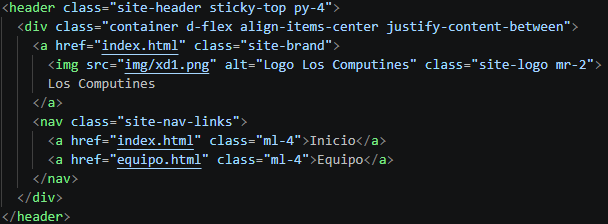
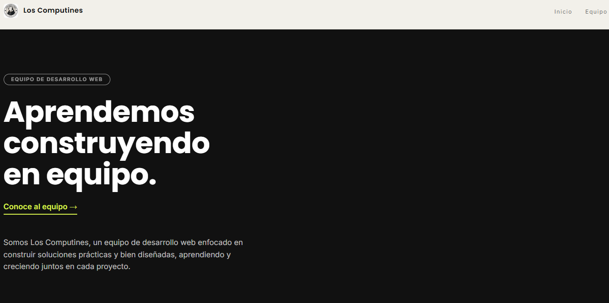
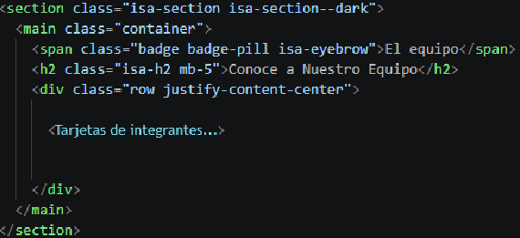
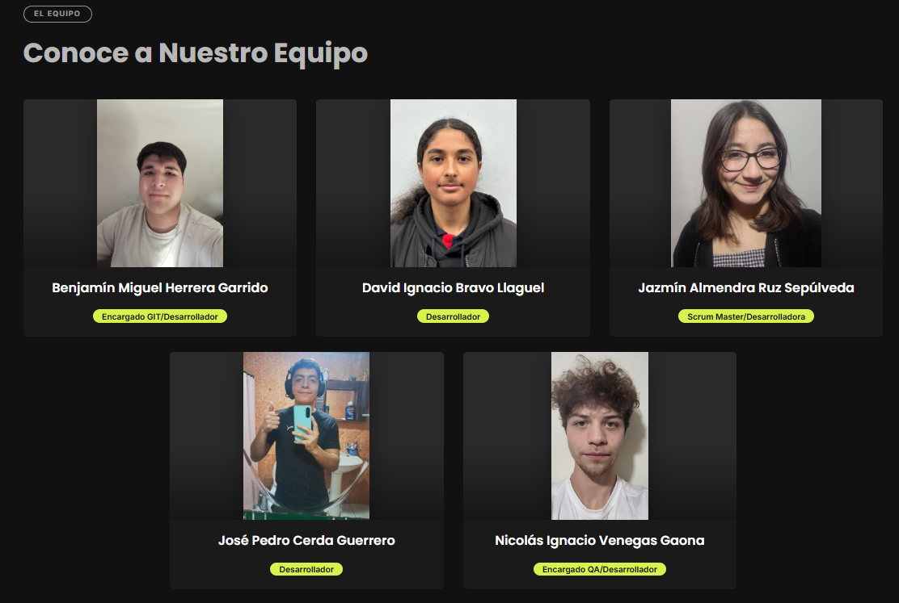
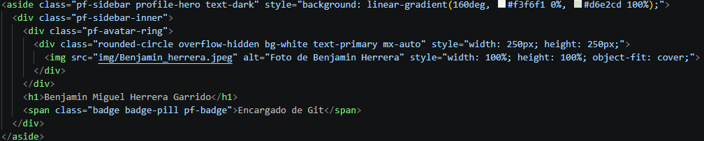
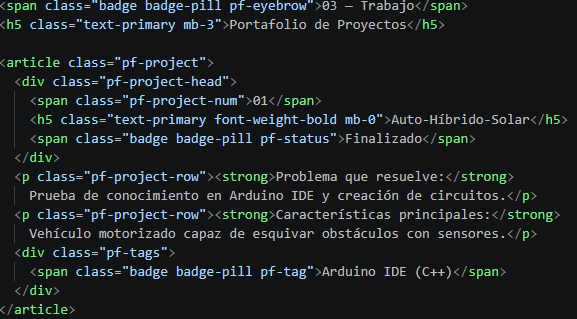
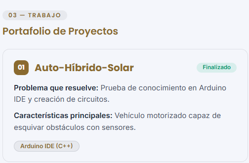
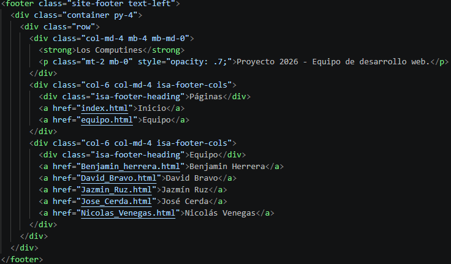
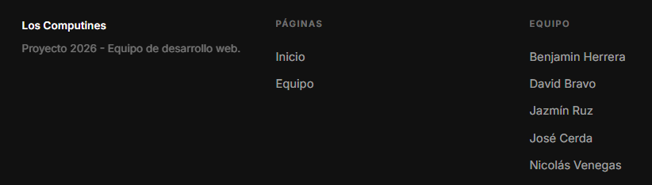

Documentación sobre las piezas fundamentales utilizadas para estructurar semánticamente nuestro sitio web, mejorando la accesibilidad y el orden del código.
<header> define la cabecera del documento. <nav> envuelve la sección exclusiva para los enlaces de navegación principales.index.html, para contener el logo y el menú superior.
Evidencia: Fragmento de código HTML.

Evidencia: Implementación en la interfaz superior.
<main> delimita el contenido central y único. <section> divide el documento en áreas temáticas.<main> encapsula la cuadrícula de los integrantes en equipo.html. Las <section> dividen los bloques grandes de información.
Evidencia: Fragmento de código HTML.

Evidencia: Cuadrícula de integrantes.

Evidencia: Fragmento de código HTML.
Evidencia: Barra lateral en el perfil.

Evidencia: Fragmento de código HTML.

Evidencia: Tarjeta independiente de proyecto.

Evidencia: Fragmento de código HTML.

Evidencia: Implementación visual en la parte inferior.
 Los Computines
Los Computines